Geom_area_densidad_freqpoly
Fecha de la ultima revisión
## [1] "2025-04-21"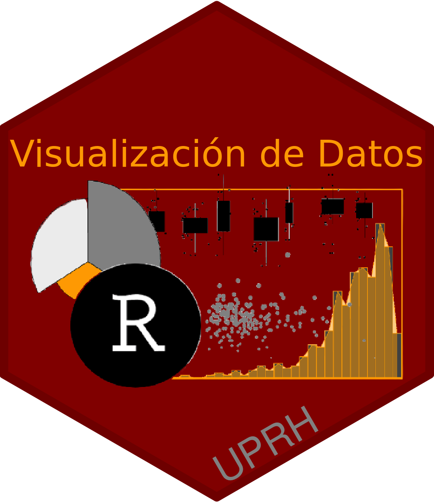
Gráficos de área, densidad y histograma de linea con geom_dotplot, geom_density y geom-freqpoly
Librerías necesarias para producir los gráficos que siguen
library(ggversa) # paquete con los datos
library(tidyverse) # paquete que instala múltiples paquetes
library(gridExtra) # Un paquete para organizar las figuras de ggplot2
library(janitor)Gráfico de área con geom_area
Sección Gráfico De Área
El gráfico de área es análogo a un histograma o a un gráfico de barras. En la figura a continuación se observa cómo la cantidad en X cambia en frecuencia con respecto a Y a lo largo del rango de la variable X. Se observa a continuación que los datos no están agrupados en barras como cuando se usa geom_histogram pero representados como un área continua. Note que en contraste a un histograma, los cambios de frecuencia son suavizados y no discretos.
DW=dipodium
DW=clean_names(DW)
a=ggplot(DW, aes(distance))
a+geom_area(stat="bin", fill="aquamarine", color="black")+
labs(x="Distancia (m) al arbol más cercano", y="Frecuencia")+
theme(axis.title=element_text(size=10,face="bold"))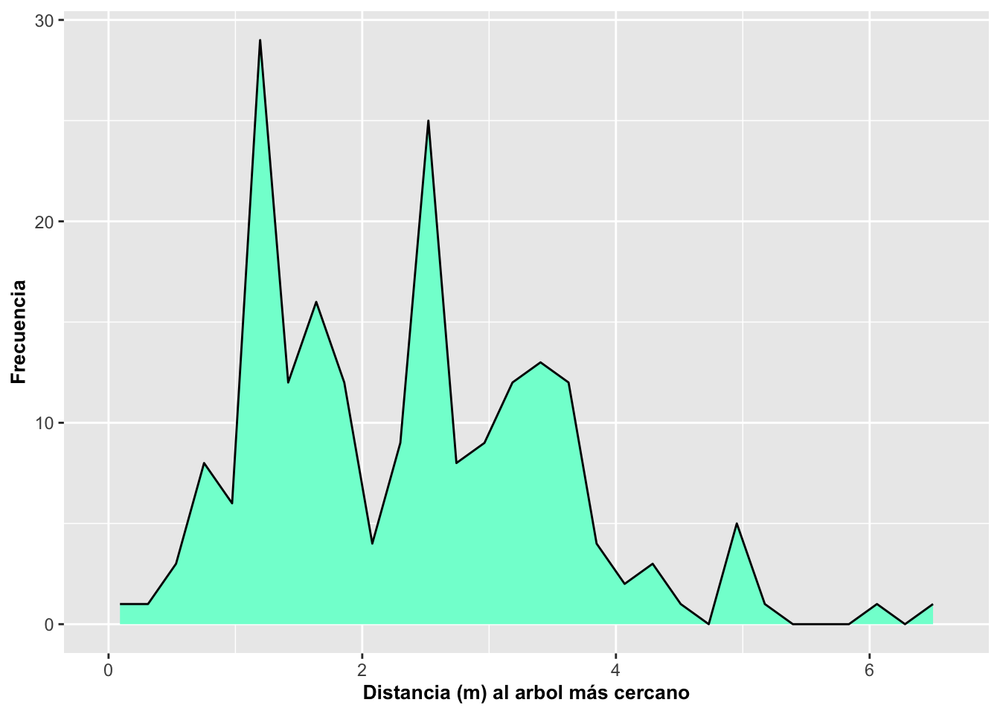
En este siguiente gráfico se cambia el color de linea que sigue el contorno del área. Para hacer este cambio se puede identificar el tipo de linea con linetype, el color con color, el grosor de la linea con size y la intensidad del color con alpha.
a=ggplot(DW, aes(distance))
a+geom_area(stat="bin", fill="steelblue1",
linetype="twodash", color="black", size=0.5, alpha=0.1)+
labs(x="Distancia", y="Frecuencia")+
theme(axis.title=element_text(size=10,face="bold"))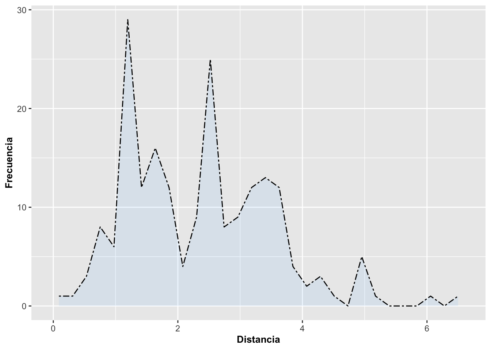
Los tipos de linetype
Vea las alternativas de “linetype” en este enlace linetype. Algunas de estas lineas se pueden llamar usando un nombre “blank”, “solid”, “dashed”, “dotted”, “dotdash”, “longdash”, “twodash”, o numeración “1F”, “F1”, “4C88C488”, “12345678.
par(mar=c(0,0,0,0))
# Set up the plotting area
plot(NA, xlim=c(0,1), ylim=c(10.5, -0.5),
xaxt="n", yaxt="n",
xlab=NA, ylab=NA )
# Draw the lines
for (i in 0:10) {
points(c(0.25,1), c(i,i), lty=i, lwd=2, type="l")
}
# Add labels
text(0, 0, "0. 'blank'" , adj=c(0,.5))
text(0, 1, "1. 'solid'" , adj=c(0,.5))
text(0, 2, "2. 'dashed'" , adj=c(0,.5))
text(0, 3, "3. 'dotted'" , adj=c(0,.5))
text(0, 4, "4. 'dotdash'" , adj=c(0,.5))
text(0, 5, "5. 'longdash'", adj=c(0,.5))
text(0, 6, "6. 'twodash'" , adj=c(0,.5))
text(0, 7, "6. '1F'" , adj=c(0,.5))
text(0, 8, "6. 'F1'" , adj=c(0,.5))
text(0, 9, "6. '4C88C488'" , adj=c(0,.5))
text(0, 10, "6. '12345678'" , adj=c(0,.5))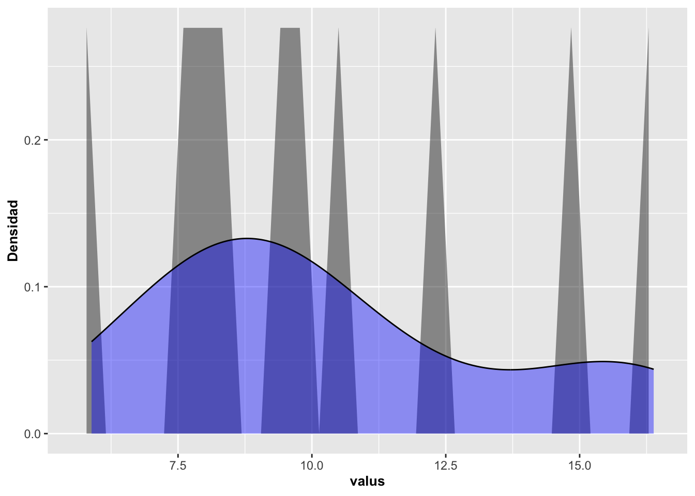
Ahora al gráfico siguiente, se le cambia el color de la línea a negro a la vez que se le cambia el estilo de la línea con linetype y el grosor de la misma con size.
a=ggplot(DW, aes(distance))
a+geom_area(stat="bin", fill="steelblue1",
linetype="4C88C488", color="orange", size=.4, alpha=0.5)+
labs(x="Distancia", y="Frecuencia")+
theme(axis.title=element_text(size=10,face="bold"))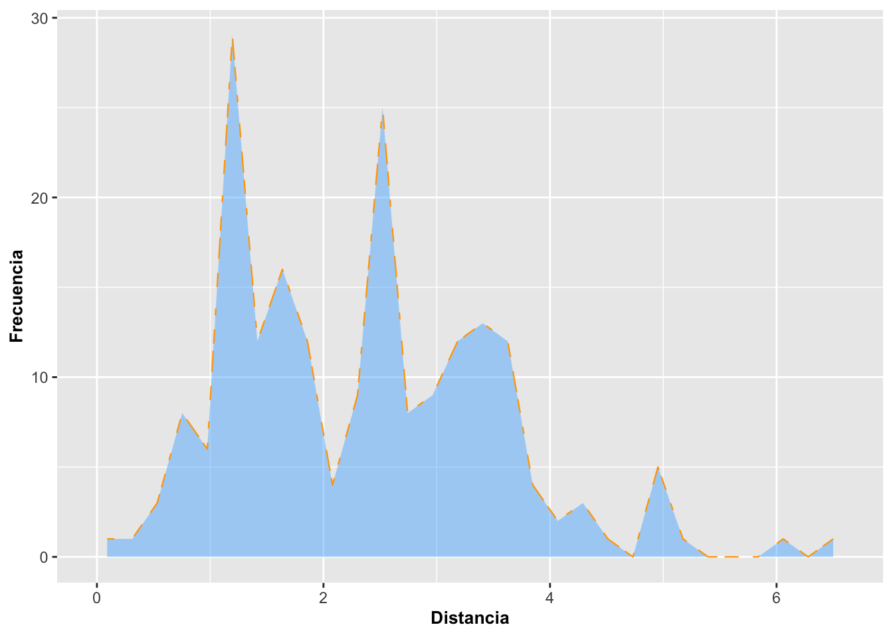
geom_area con múltiples grupos
Finalmente, en el siguiente gráfico, se muestran los datos de la frecuencia de camas en hospitales por cada 1000 habitantes en diferentes años.
## Pais Year Poblacion Camas
## 129 Turkey 2006 68704721 2.7000
## 130 Turkmenistan 2006 4801594 4.3331
## 131 Ukraine 2006 46787750 8.7000
## 132 United States 2006 298379912 3.1000
## 133 Uruguay 2006 3331041 2.9000
## 134 Yemen, Rep. 2006 21093973 0.7000## [1] 1996 2006## [1] Armenia Australia Austria
## [4] Azerbaijan Bahamas, The Barbados
## [7] Belarus Belize Bolivia
## [10] Bulgaria Burkina Faso Canada
## [13] Chile China Colombia
## [16] Costa Rica Croatia Cuba
## [19] Egypt, Arab Rep. El Salvador Estonia
## [22] Finland France Georgia
## [25] Germany Greece Guyana
## [28] Hungary Iran, Islamic Rep. Ireland
## [31] Israel Italy Jamaica
## [34] Japan Kazakhstan Korea, Rep.
## [37] Kyrgyz Republic Latvia Lithuania
## [40] Macedonia, FYR Malaysia Malta
## [43] Mexico Moldova Nepal
## [46] Nicaragua Norway Paraguay
## [49] Poland Portugal Romania
## [52] Russian Federation Slovak Republic Slovenia
## [55] Spain St. Lucia Suriname
## [58] Syrian Arab Republic Tajikistan Trinidad and Tobago
## [61] Tunisia Turkey Turkmenistan
## [64] Ukraine United States Uruguay
## [67] Yemen, Rep.
## 67 Levels: Armenia Australia Austria Azerbaijan Bahamas, The ... Yemen, Rep.a=ggplot(Camas_Hospital, aes(Camas, fill=factor(Year)))
a+geom_area(stat="bin",bins=30, alpha=0.5)+
xlab("Número de camas por \n cada 1000 habitantes")+
ylab("Frecuencia")+
scale_y_continuous(breaks=c(0,1,2,3, 5:8))+ # Cambio en la escala de eje
scale_x_continuous(breaks=c(0:15))+
theme(axis.title=element_text(size=10,face="bold"))+
facet_wrap(~Year)+
theme(legend.position=c(0.8, 0.8))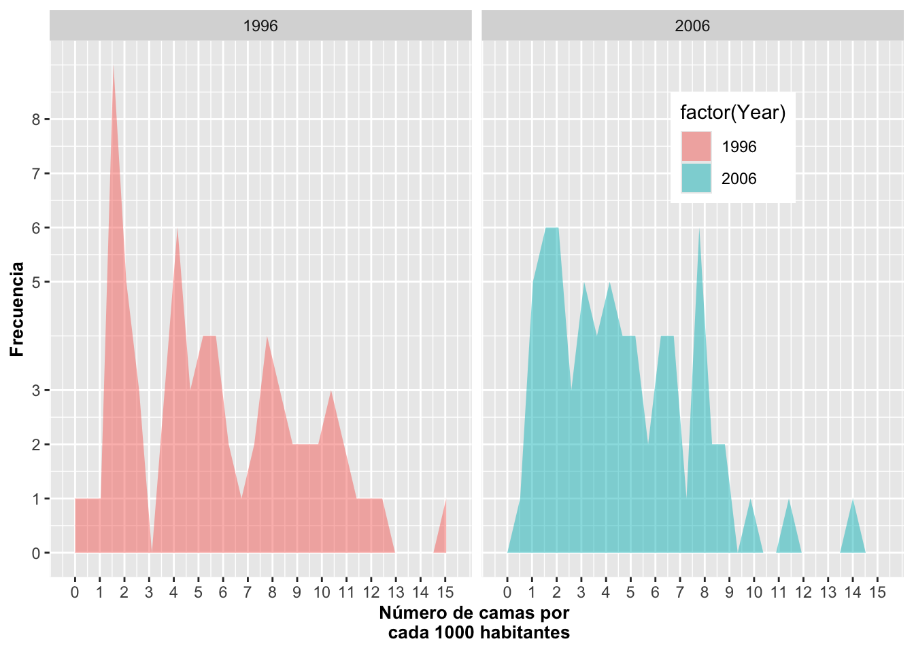
## # A tibble: 2 × 2
## # Groups: Year [2]
## Year n
## <int> <int>
## 1 1996 67
## 2 2006 67La función densidad aes(after_stat(density))
Uno puede utilizar la opción stat a la vez que identifica el eje de Y para visualizar la densidad y no la frecuencia de los datos con la siguiente modificación aes(after_stat(density)). Esto modifica la visualizar del gráfico a densidad en los datos en vez de mostrar el conteo/frecuencia para cada grupo. Si uno compara las dos gráficas anteriores a estas nuevas gráficas uno observa que la densidad de camas en hospitales por 100,000 cambio con los años habitantes, hubo un aumento en densidad (proporcionalmente más camas en 2006 por habitantes). Nota que no hay un pico cerca de uno en 1996, pero en 2006 la distribución esta más dispersado entre los valores y no concentrado cerca de uno.
## Pais Year Poblacion Camas
## 1 Armenia 1996 3173425 7.13
## 2 Australia 1996 18311000 8.50
## 3 Austria 1996 7959017 9.30
## 4 Azerbaijan 1996 7763000 9.81
## 5 Bahamas, The 1996 283792 3.94
## 6 Barbados 1996 265940 7.56a=ggplot(Camas_Hospital, aes(Camas, fill=factor(Year)))
a+geom_area(aes(y=..density..),stat="bin", alpha=0.5)+
xlab("Número de camas por cada 1000 habitantes")+
ylab("Densidad")+
theme(axis.title=element_text(size=10,face="bold"))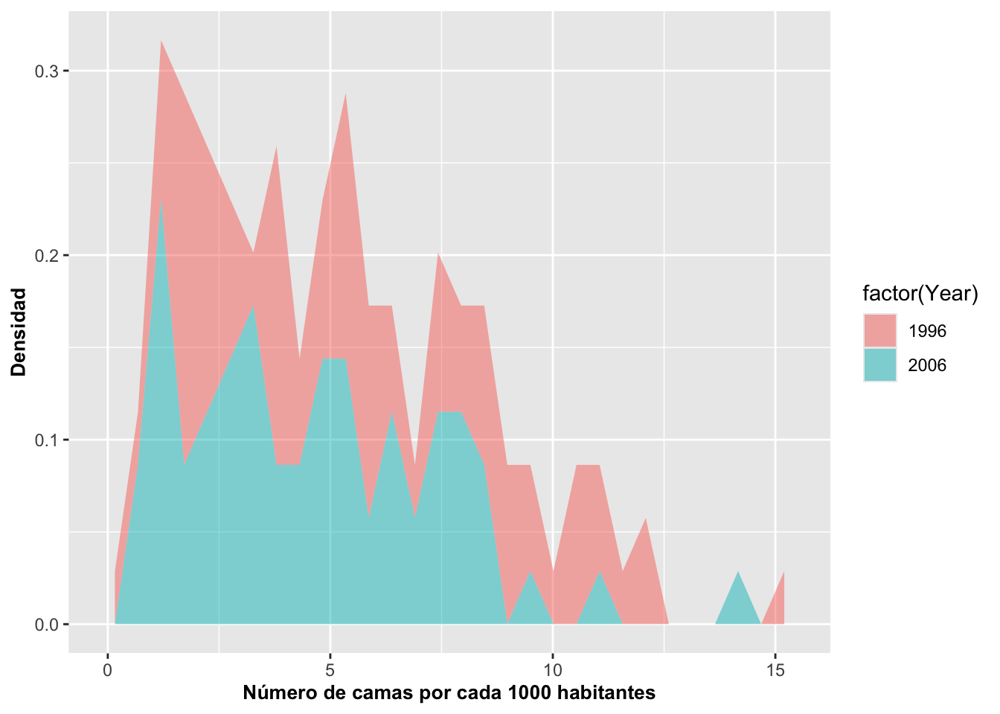
Opciones y Parametros de geom_area:
ggplot (el archivo de datos, aes(la variable continua)) +geom_area(stat= bin, x, y, alpha, color, fill, linetype, size)
- alpha: la intensidad del color
- color: el color de la línea alrededor del área
- fill: el color del área
- linetype: representa el estilo de línea
- size: representa el grosor de la línea
- stat: el método predeterminado es {identity}, que representa los datos, o la transformación estadística
Gráfico de densidad con geom_density
Un gráfico de densidad, también conocido como una función de probabilidad de densidad, pdf o probability density function en inglés, se utiliza con variables que contienen datos continuos. La función de densidad es continua en el rango de los valores, y la suma de todas la probabilidades es igual a uno. Vimos anteriormente que se puede visualizar la densidad también con geom_area y geom_histogram. La función geom_density facilita la producción del gráfico y amplía las alternativas como se explica en breve.
¿Qué es un kernel?
Estimar la densidad de los datos en un gráfico requiere seleccionar
un parámetro, un kernel, para suavizar la distribución.
El más utilizado es el gaussian, que representa la
distribución normal o conocida comúnmente como distribución de forma de
campana. Si no se especifica cuál kernel utilizar, la
distribución normal es la predeterminada; por ejemplo, cuando se
especifica geom_density() sin ninguna otra
opción.
Otra alternativa es usar geom_density(kernel =
c(kernel={gaussian}), u otras alternativas. Otros parámetros
para kernel son:
- rectangular,
- triangular,
- epanechnikov,
- biweight,
- cosine,
- optcosine,
- gaussian
EL kernel es un tipo especial de función de probabilidad de densidad que tiene ciertas propiedades específicas, ya sea que esta no sea negativa y con valores reales de manera tal que el gráfico salga simétrico, y que la suma de la integral sea igual a uno. Se añadió también geom_density para comparar el resultado de las dos funciones.
Note que en el gráfico siguiente se usó el parámetro alpha=0.4. Este modifica la transparencia del color azul del parámetro fill=blue. La intensidad de alpha=0.4 puede variar de 0 a 1, tal como se ha explicado anteriormente. En el ejemplo a continuación se utilizan los datos de la Dipodium rosea otra vez.
a=ggplot(DW, aes(distance))
a+
geom_area(aes(y=..density..),stat="bin", alpha=0.5)+
geom_density(kernel = c(kernel="gaussian"),
alpha=0.4, fill="blue")+
labs(x="Distancia", y="Densidad")+
theme(axis.title=element_text(size=10,face="bold"))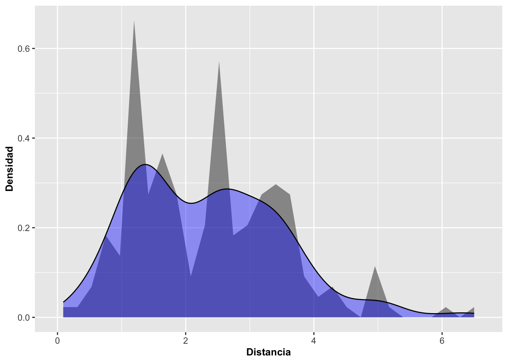
x=rnorm(100, 10, 4)
x=data_frame(x)
a=ggplot(x, aes(x))
a+geom_area(aes(y=..density..),stat="bin", alpha=0.5)+
geom_density(kernel = c(kernel="gaussian"),
alpha=0.4, fill="blue")+
labs(x="values", y="Densidad")+
theme(axis.title=element_text(size=10,face="bold"))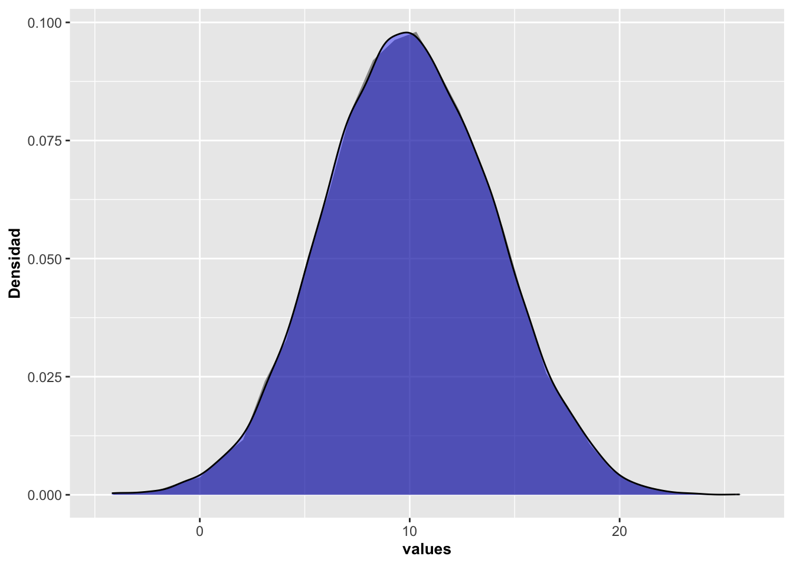
geom_density y datos simulados
La función de geom_density se puede entender mejor si se evalúa con datos simulados. Vamos a continuación a simular datos con diferentes tamaños de muestra para visualizar las densidades. En la simulación a continuación se crean 4 data frame con 2000, 500, 50 y 10 datos respectivamente con la función rnorm. Naturalmente, lo que se observa es que si los datos provienen de una distribución normal, entre más datos se incluyan, la distribución correspondiente se acerca más a como debe lucir una distribución normal. Pero, lo contrario es que con pocos datos, es probable que la densidad no se asemeje a la distribución teórica (normal).
a=rnorm(20000, 0, 1)
a=as.data.frame(a)
a=ggplot(a, aes(a))+
geom_density(kernel = c(kernel="gaussian"),
alpha=0.4, fill="yellow")+
labs(y="Densidad")+
theme(axis.title=element_text(size=10,face="bold"))
b=rnorm(500, 0, 1)
b=as.data.frame(b)
b=ggplot(b, aes(b))+
geom_density(kernel = c(kernel="gaussian"),
alpha=0.4, fill="red")+
labs(y="Densidad")+
theme(axis.title=element_text(size=10,face="bold"))
c=rnorm(50, 0, 1)
c=as.data.frame(c)
c=ggplot(c, aes(c))+
geom_density(kernel = c(kernel="gaussian"),
alpha=0.4, fill="blue")+
labs(y="Densidad")+
theme(axis.title=element_text(size=10,face="bold"))
d=rnorm(10, 0, 1)
d=as.data.frame(d)
d=ggplot(d, aes(d))+
geom_density(kernel = c(kernel="gaussian"),
alpha=0.4, fill="grey")+
labs(y="Densidad")+
theme(axis.title=element_text(size=10,face="bold"))
Excercise
According to data from Our World in Data, the mean world human height is approximately 170.8 cm for men and 164.7 cm for women, with a standard deviation of around 7 cm for both genders. ## Key points:
- Male mean: 170.8 cm
- Female mean: 164.7 cm
- Standard deviation (both genders): around 7 cm
DO a figure of the density distribution of male and female human height and compare with the mean and standard deviation of world data
## [1] 170.60 180.00 167.64 185.93 177.00 177.00male_students=as.data.frame(male_students)
female_students=c(152.4, 170.68, 167.64, 121.92, 164.59, 152.4, 152.4, 163, 157) # height in cm
female_students=as.data.frame(female_students)
female_students## female_students
## 1 152.40
## 2 170.68
## 3 167.64
## 4 121.92
## 5 164.59
## 6 152.40
## 7 152.40
## 8 163.00
## 9 157.00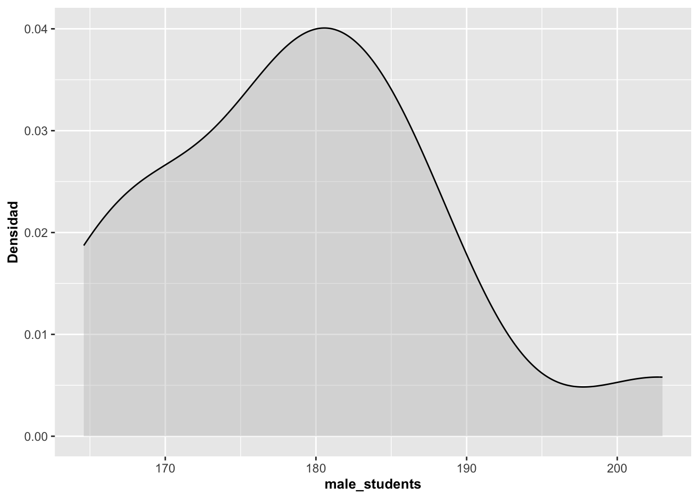
#set.seed(123987)
# Simulate
world_male=rnorm(10^4, 170.8, 7)
world_male=as.data.frame(world_male)
head(world_male)## world_male
## 1 181.8899
## 2 168.2980
## 3 175.4863
## 4 170.1223
## 5 168.6674
## 6 165.9980## [1] 162.4451 169.4151 161.6589 178.6324 171.2921 173.9915OVERLAY two figures from different data sets
male=ggplot()+
geom_density(aes(world_male), kernel = c(kernel="gaussian"),
alpha=0.4, fill="yellow", data=world_male)+
geom_histogram(aes(male_students, y=..density..), position="identity", data=male_students)
male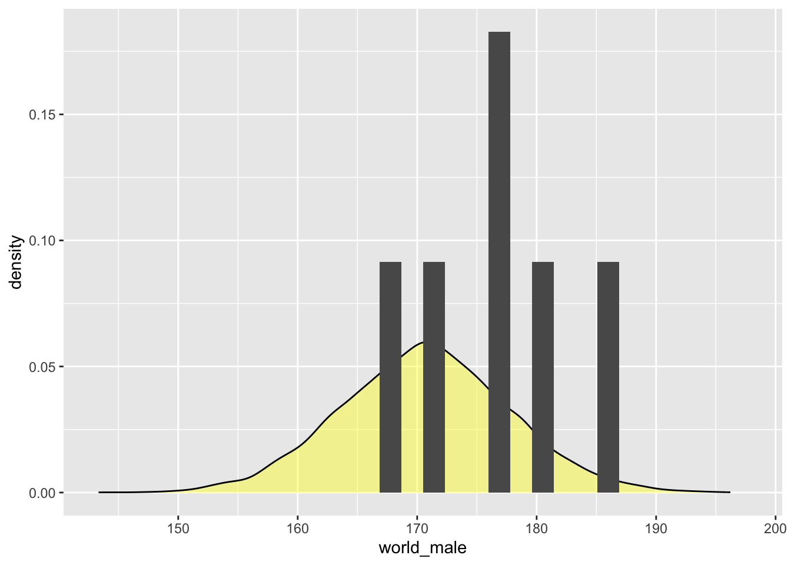
## NEW script, see after_stat(density)
male_2=ggplot()+
geom_density(aes(world_male), kernel = c(kernel="gaussian"),
alpha=0.4, fill="red", data=world_male)+
geom_histogram(aes(male_students, after_stat(density)), position="identity", data=male_students)
male_2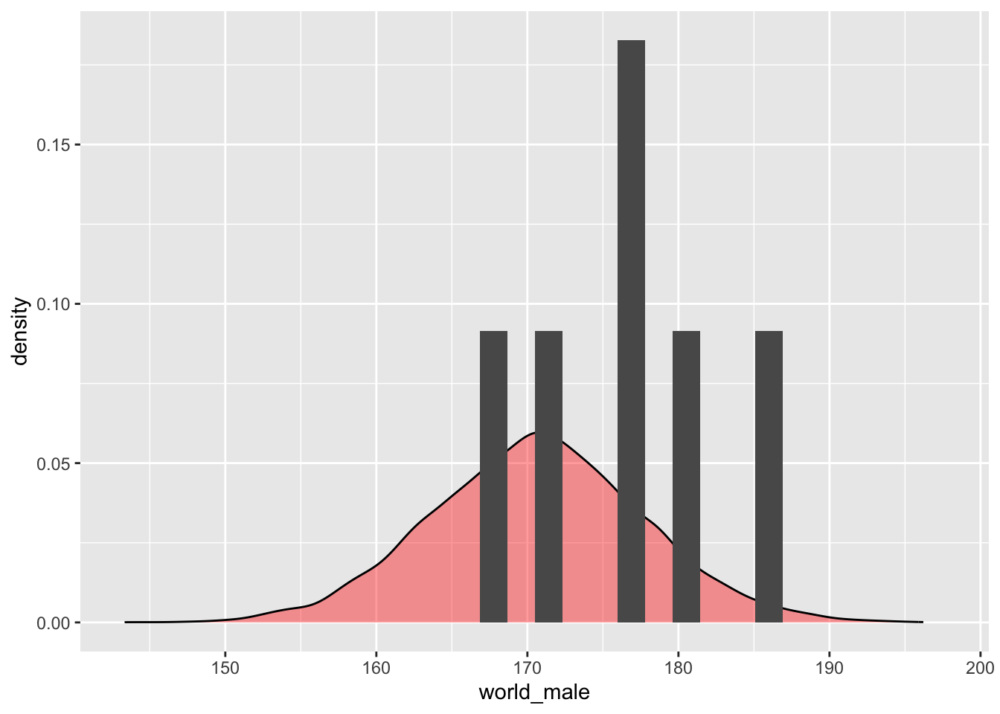
Opciones y Parametros de geom_density:
ggplot(el archivo de datos, aes(la variable continua))
- geom_density(kernel= {…}), x, y, alpha, color, fill, linetype, size,
weight
- … representa el parámetro deseado; ej. gaussian, triangular, rectangular, etc.
- alpha: la intensidad del color
- fill: el color del área
- color: el color de la línea alrededor del área
- linetype: representa el estilo de línea
- size: representa el grosor de la línea
- weight: para modificar el valor original; entonces no sería, por ejemplo, el conteo o suma de los valores si no un valor ponderado (promedio ponderado)
- geom_density(kernel= {…}), x, y, alpha, color, fill, linetype, size,
weight
Gráfico de frecuencia de polígono con geom_freqpoly
El gráfico de frecuencia de polígono es similar al gráfico de área y de densidad, la diferencia es que no se rellena el área con color. También se puede cambiar la cantidad de compartimentos usando binwidth. En el gráfico de polígono, es solamente la línea la que gráficamos y no hay parámetro de fill del área debajo de la línea.
a=ggplot(DW, aes(distance))
a+geom_freqpoly(binwidth=.1, color="#e3cc36")+ # Nota como seleccionar el color con "color picker" en el web.
labs(x="Distancia (m)", y="Frecuencia")+ # labels = labs
theme(axis.title=element_text(size=14,face="italic"))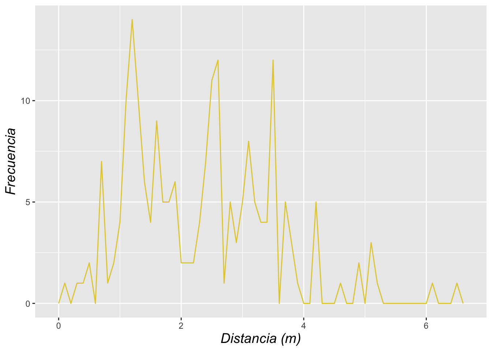
Se modifica otras opciones como sigue: intensidad del color con alpha, el tipo de línea con linetype y el grosor de la línea con size tal como se muestra a continuación.
DW%>%
drop_na()%>%
ggplot(aes(distance, colour=species_name))+
geom_freqpoly(alpha=1.0, size=1.0, binwidth=.1, linetype="longdash")+
labs(x="Distancia", y="Frecuencia")+
theme(axis.title=element_text(size=14,face="bold"))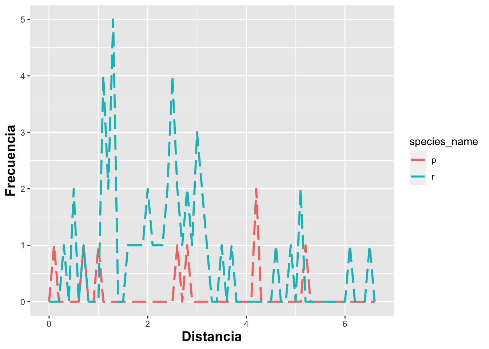
## # A tibble: 1,365 × 21
## tree_number tree_species dbh plant_number ramet_number distance orientation
## <int> <chr> <dbl> <int> <int> <dbl> <dbl>
## 1 1 E.o 75 1 1 2.47 40
## 2 1 E.o 76 2 1 1.97 50
## 3 2 E.o 76 3 1 1.95 350
## 4 3 E.o 58 4 1 3.24 210
## 5 4 E.o NA 5 1 0.85 80
## 6 5 E.o 59 6 1 2.62 160
## 7 5 E.o 59 7 1 2.82 170
## 8 6 E.o 8 8 1 3.12 245
## 9 7 E.o 11.5 9 1 1.12 208
## 10 8 E.o 8.5 10 1 0.75 360
## # ℹ 1,355 more rows
## # ℹ 14 more variables: number_of_flowers <dbl>, height_inflo <dbl>,
## # herbivory <chr>, row_position_nf <int>, number_flowers_position <int>,
## # number_of_fruits <int>, perc_fr_set <dbl>, pardalinum_or_roseum <chr>,
## # fruit_position_effect <int>, frutos_si_o_no <int>,
## # p_or_r_infl_lenght <chr>, num_of_fruits <int>, species_name <chr>,
## # cardinal_orientation <int>Opciones y Parametros de geom_freqpoly
ggplot(el archivo de datos, aes(la variable continua))
- geom_freqpoly(stat={bin}, x, y, alpha, color, linetype, size)
- alpha: la intensidad del color
- color: el color de la línea alrededor del área
- linetype: representa el estilo de línea; vea sección
- size: representa el grosor de la línea
- Actividad Usar el data set “dipodium” en el paquete “ggversa”.
Presenta un gráfico de la frecuencia de flores por
planta con geom_freqpoly.
- Cambia el color de la linea
- Cambiar la información de los ejes para texto más relevante
- Cambiar la intensidad de color de la linea
- Cambiar el tipo de linea